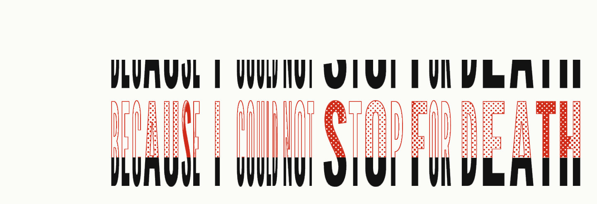

A headset call cuts your voice at 8 kHz, where s, f and t live. Untunnel draws the rest back.

A LibriVox reading of Emily Dickinson (public domain), sent through the
project’s mSBC headset simulation and restored by
untunnel enhance --model streaming --bwe 48000. The source is a 64 kbps MP3
whose own top stops at 10.9 kHz, so the red above that has no original
to match. The red is predicted, not recovered.
- Survived the headset, up to 8 kHz
- Predicted by the model, 8 to 24 kHz
- Where the headset stops
Where it stands
The app wires the outgoing path: headset capture, resampling and drift control, the restoration model and the “Untunnel Microphone” driver, falling back to the raw microphone whenever a stage fails. That path has not run on a real call yet. It needs the driver installed with administrator rights and a headset to test with, and no release is published.
Restoring the other person’s voice is wired too, behind a menu toggle that starts off. It taps the call app, restores its audio and plays it on headphones only. It has not run on a real call either, and it needs macOS’s system-audio permission, which no one has granted it yet.
What runs today without the driver: the model on files
(untunnel enhance), the benchmark, doctor, the
driver build, uninstall, and the Hear Yourself window, which
records your headset and plays the restored take beside the original.
What a call does to a voice
A headset plays music at a high sample rate. When any app opens its microphone, macOS switches it to the Bluetooth call profile, which carries your voice at 16 kHz or 8 kHz. Anything above half that rate is gone, and consonants such as s, f and t live there.
Untunnel runs a speech restoration model on that narrow signal. It predicts the missing band from what survived; it does not recover it. A virtual microphone, “Untunnel Microphone”, carries the result into Zoom, Meet or FaceTime.
There are two models, both written in Swift from the published architecture and held to the publisher’s own code by parity tests. The streaming model, NVIDIA’s Real-time RE-USE, is the live path: a 40 ms window, a 20 ms hop, and recurrences that keep state from frame to frame. The offline model, NVIDIA-NemotronLabs-RE-USE, reads a whole chunk at once, so it works on files only.
How the audio flows through each source file, the architecture and the decisions.
See what your headset sends
Record five seconds in this browser and see the highest frequency your headset sends on a call. Nothing is uploaded.
Time per frame
Run untunnel bench to measure streaming engine time on your Mac.
The result is per-frame engine time; end-to-end call delay has not been measured.
Install
Planned for the first release; neither line works before it exists. Read the install script first.
curl -fsSL https://untunnel.intesarjawad.com/install.sh | sh
brew install intesarjawad/tap/untunnelFrom source today, with Xcode (Swift 6.2 or later), uv, make, Git and gitleaks on Apple silicon and macOS 15 or later:
make setup
make check
make runWhat it writes, and how it leaves
Four paths. Models, Monitor recordings and preferences live inside the Application Support folder.
~/Applications/Untunnel.app~/Library/LaunchAgents/com.intesarjawad.untunnel.plist~/Library/Application Support/Untunnel/Library/Audio/Plug-Ins/HAL/Untunnel.driver
untunnel uninstall --dry-run lists them and the commands it
would run; untunnel uninstall does the same after asking. It
leaves the app’s user defaults;
defaults delete com.intesarjawad.untunnel removes them.
Licences
The code is MIT. The model weights are not included and keep their own licences.
- Streaming,
nvidia/Real-time_RE-USE - NVIDIA One-Way Noncommercial License (NSCLv1): non-commercial research and educational use. This is the live path, so a build that restores a call with it is for non-commercial use, whatever licence the Swift code has.
- Offline,
nvidia/NVIDIA-NemotronLabs-RE-USE - OpenMDW-1.1. Its model card says it is ready for commercial use; read the licence text before you rely on that. It works on files only.
Limits
- The missing band is predicted from what survived, not recovered.
- The live path has not run on a real call yet, and the added delay is not measured. The streaming model alone adds its 40 ms window plus one 20 ms hop per look-ahead frame.
- Speech only. The model suppresses what is not speech.
- The streaming weights are non-commercial. The model cleared for commercial use works on files only.
- Incoming restoration (the other person) runs on headphones only, because on speakers it would reach the call as echo.
- Apple silicon and macOS 15 or later only. Timings exist for no other machine.
- The app and driver are signed ad hoc and not notarised.
- Not compared by ear or by measurement with Apple Mic Modes, Krisp or the rest; what each one does.